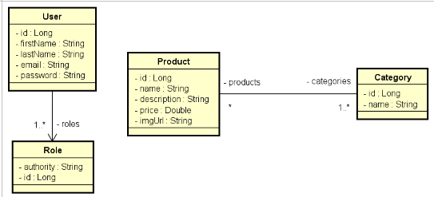
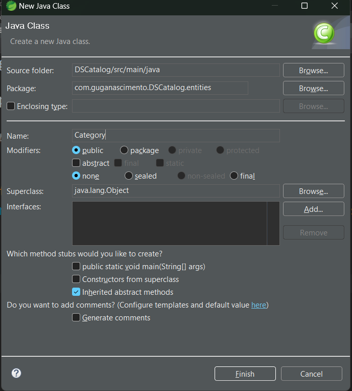
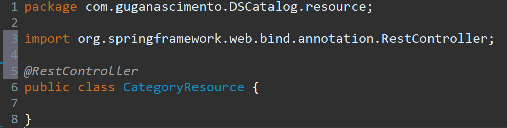
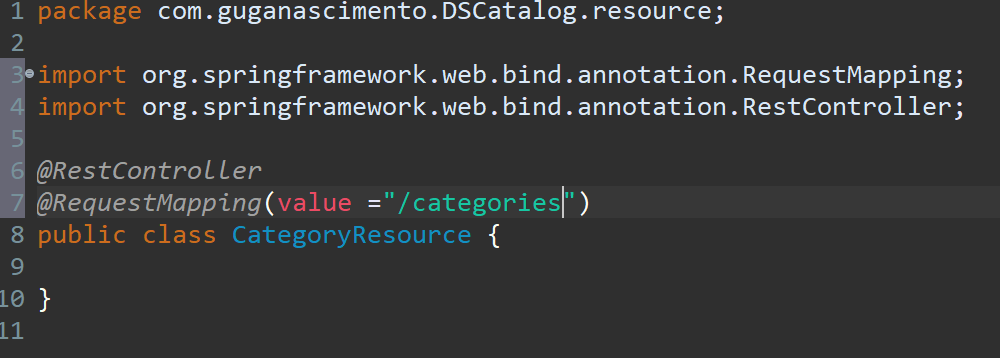
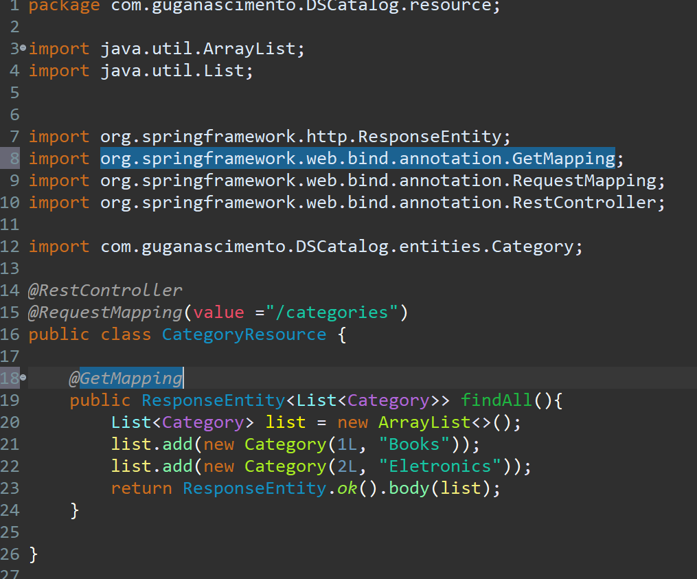
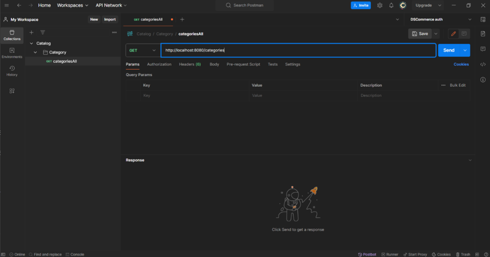
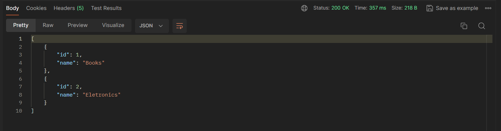

Modelo de domínio
Seguindo esse modelo de domínio iniciamos a criação primeiro da classe independente a Category.
 Com esse comando criamos a classe Category dentro do pacote entities.Uma classe Java recebe seus atributos todos declarados como private por motivo de encapsulamento, depois
inserimos os gets e sets.
Agora criamos o Construtor padrão e o Construtor com argumentos que serão
usados na instanciação dos objetos do sistema.
Agora vamos inserir o hashcode e equals para ter um parâmetro
de comparação entre duas classes. Comparando apenas com id.
Agora pensando no sistema de camadas vamos criar dentro do pacote resource a class CategoryResource.
Inserindo e importando a annotation @RestController para informar que está classe é um controlador REST.
Agora Inserimos a @RequestMapping para passar a rota rest do recurso. sabemos então que esse recurso
responde nessa rota /categories.
Dentro da classe vamos criar o método ResponseEntity que é um método que vai encapsular uma resposta http.
Esse método é do tipo Generics que indica dentro <> o tipo de dado que vai receber, e chamamos o findAll que retorna todas
as categorias do sistema.

Linha20: Criamos uma List que é uma interfaceJava do tipo Category que é a classe que criamos instanciando com o ArrayList que é
o padrão usado no List.
Linha 21 e 22: Inserimos duas categorias em nosso sistema.
Linha 23: Feito o return ResponseEntity.ok().body(list); onde o método chama o ok que permite eu responder uma resposta 200
que é quando a requisição foi aceita e o recurso foi entregue.
O .body(recebendo list para definir o corpo da resposta).
Por fim para configurar que esse método vai ser um endpoint do meu recurso categories inserimos o @GetMapping como visto
na imagem acima.
Iniciando teste no POSTMAN
Após criar uma nova collection no postman e nomear de Catalog e criar a requisição categoriesAll executamos o teste e recebemos como retorno a resposta abaixo, trazendo todas as categorias do sistema.
Concluimos então a classe Category.